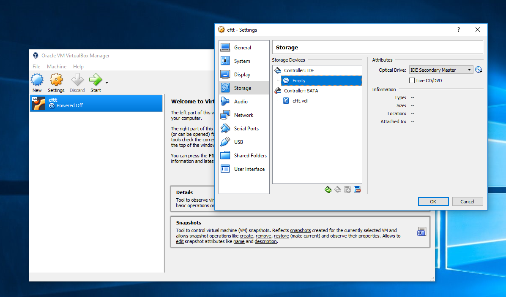
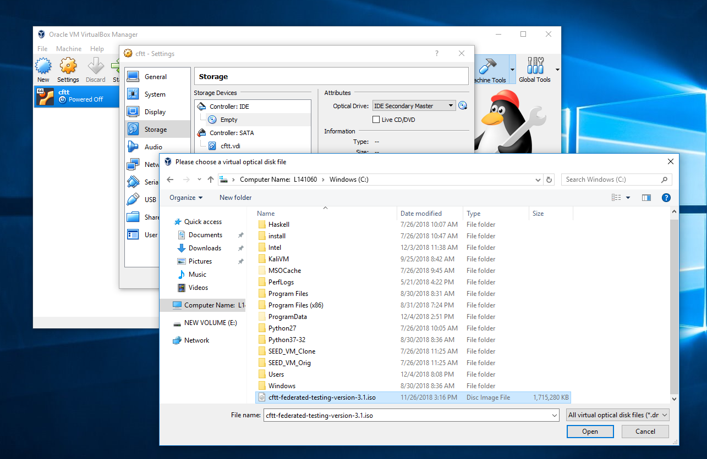
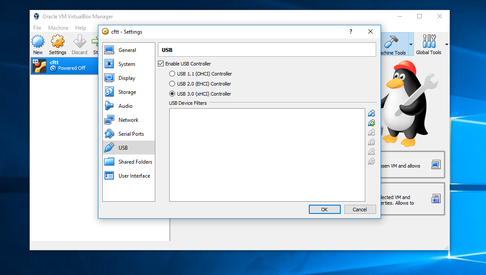
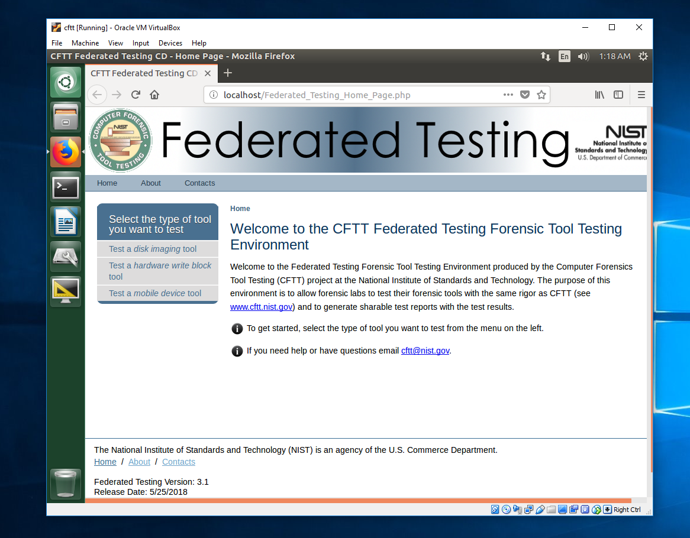

Hardware Write Blockers
A hands-on activity to evaluate hardware write blocker (HWB) and a sample set of test results are available here.
A. An Overview
We design a HWB evaluation module, which is to test HWB's ability to write protect a hard drive. This test can be repeated to test multiple types of connections (interfaces) between a computer and the write blocker. In particular, this evaluation module tests the ability of the HWB to block write commands (from the ATA and SCSI command sets) issued from a test computer from modifying a hard drive. The manufacturer, model & size of the test drive used in this test may vary.
B. HWB Evaluation Module: Our Hands-On Activity
1. Goals
To become familiar with (a) Hardware Write Blocker (HWB) and its basic functionality, (b) NIST CFTT Federated Testing system, and how to use this system to evaluate a HWB.
2. Preparation
Visit NIST CFTT program’s website on HWB, and read documents on HWB specifications Version 2.0 and the test plan for Version 2.0. here.
3. Tasks (Watch this video)
The first task is to use the Federated Testing iso file (which can be downloaded here) to start a VM on VirtualBox. Below are some of the intermediate steps (i.e. screenshots), which you will go through.
   
The second task is to make physical connections among the devices which we need for this test. In particular, connect the target hard drive (to be protected) to one side of the HWB whose other side is connected to the forensic computer (NIST CFTT Linux system). The setup may look like the following figure:

The third task is as follows; On the welcome page of Federated Testing Forensic Tool Testing Environment, click on “Test a hardware write block tool” (which is available on the left panel). Then, walk over the following steps to test a HWB:
- a. Go to “Hardware Write Block Home” page and click on “ … Get Started”.
- b. Now click on “Format your Log Drive”. Assuming you do not use an external flash drive, system will show internal virtual drive /dev/sda to you to select as the log drive.
- c. Follow the instruction to mount the Log Drive.
- d. Go to “Generate test cases and start testing”.
- e. Select a hardware write block type. Choose the “hard drive” option.
- f. Describe the write blocker. Put in detailed information on manufacturer and model name, and so on. Select the drive type as SATA. Choose USB3 as the type of connection between test computer and HWB.
- g. Review test selections.
- h. Select the FT-HWB-SATA option and ‘Run test case’.
- i. Get results.
- j. Generate a test report; a test report copy will be written in the Log Drive.
- k. Open the test report in a Windows computer, and copy the content of the report to a new word document. This will look like the following.

Now delete or replace the green text with related, correct, or specific information.
- l. Go to the log file in the Log Drive (something like hwbtestlog.txt) and find the detailed test results. Now focus on a specific write command (e.g., opcode 30h). During the test, this command (30h) was issued to write to one sector (say S) of the hard disk, and the details are in the appendix. Check the (reported) content of the sector S before the test and after the test. Briefly verify whether they are “unchanged”.
- m. Submit your test-report on Canvas.
C. Test Results
| Result Sample 1 | Result Sample 2 | Result Sample 3 |
|---|---|---|
| View File | View File | View File |
| Download File | Download File | Download File |